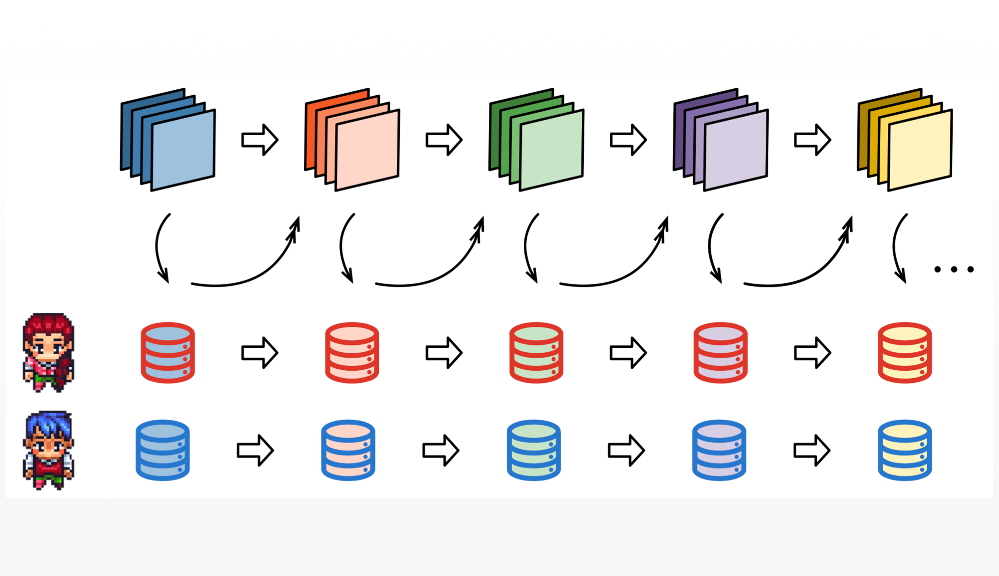
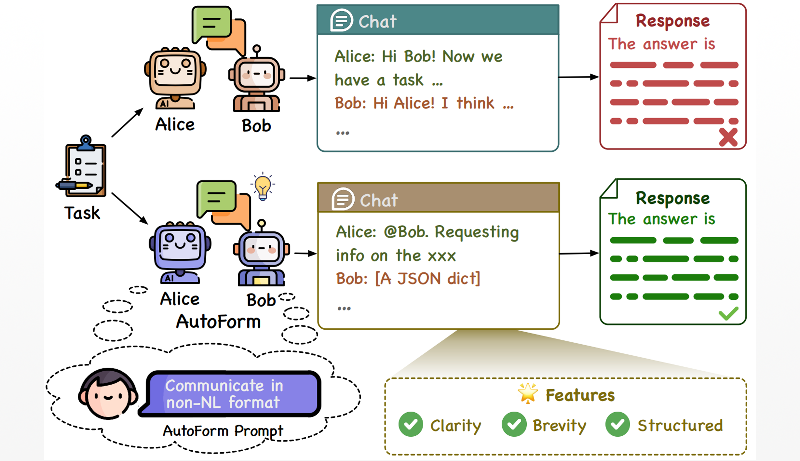

钱忱 · Chen Qian
Associate Professor
School of Artificial Intelligence
Shanghai Jiao Tong University
qianc62.github.io
Click to Copy
Room 330, School of Artificial Intelligence, Shanghai Jiao Tong University, Xuhui, Shanghai
Bio
My name is Chen Qian, and I am currently a tenure-track associate professor and PhD advisor the School of Artificial Intelligence, Shanghai Jiao Tong University. Prior to this, I was a postdoctoral researcher in the "Shuimu Tsinghua Scholar Program" at the Department of Computer Science and Technology, Tsinghua University, where I worked in the Natural Language Processing Lab—THUNLP under the supervision of Professors Maosong Sun and Zhiyuan Liu. Before my postdoctoral research, I worked as an algorithm engineer at Tencent, where I was selected for the "Tech Elite" Program. I earned my PhD from School of Software, Tsinghua University in June 2021, under the guidance of Professor Lijie Wen, and my bachelor's degree from the Beijing Institute of Technology in June 2016. During my doctoral studies, I engaged as a visiting scholar at the School of Computing, National University of Singapore, mentored by Professors Tat-Seng Chua and Fuli Feng.
My research interests lie in artificial intelligence and natural language processing, with a particular focus on autonomous agents and multi-agent systems. I have published some papers in top-tier AI conferences such as NeurIPS, ICLR, ACL, EMNLP, SIGIR and AAAI, where I also actively contribute to the academic community by serving as an area chair or program committee member.
Projects

Multi-Agent Research eBook
A comprehensive outline of large language model-based multi-agent research.

ChatDev
ChatDev: Communicative Agents for Software Development (ACL-2024)

Co-Learning
Experiential Co-Learning of Software-Developing Agents (ACL-2024)

MacNet
Scaling Large Language Model-based Multi-Agent Collaboration (ICLR-2025)

iAgents
Autonomous Agents for Collaborative Task under Information Asymmetry (NeurIPS-2024)

IoA
Internet of Agents: Weaving a Web of Heterogeneous Agents for Collaborative Intelligence (ICLR-2025)

AgentVerse
AgentVerse: Facilitating Multi-Agent Collaboration and Exploring Emergent Behaviors (ICLR-2024)

Optima
Optima: Optimizing Effectiveness and Efficiency for LLM-Based Multi-Agent System (arXiv)

Co-Evolving
Iterative Experience Refinement of Software-Developing Agents (arXiv)

CTC
Multi-Agent Software Development through Cross-Team Collaboration (arXiv)

AutoForm
Beyond Natural Language: LLMs Leveraging Alternative Formats for Enhanced Reasoning and Communication (EMNLP-2024)
Selected Publications
-
ChatDev: Communicative Agents for Software Development
Chen Qian, Wei Liu, Hongzhang Liu, Nuo Chen, Yufan Dang, Jiahao Li, Cheng Yang, Weize Chen, Yusheng Su, Xin Cong, Juyuan Xu, Dahai Li, Zhiyuan Liu, Maosong Sun
In Annual Meeting of the Association for Computational Linguistics (ACL), 2024. -
Experiential Co-Learning of Software-Developing Agents
Chen Qian*, Yufan Dang*, Jiahao Li, Wei Liu, Weize Chen, Cheng Yang, Zhiyuan Liu, Maosong Sun
In Annual Meeting of the Association for Computational Linguistics (ACL), 2024. -
Scaling Large-Language-Model-based Multi-Agent Collaboration
Chen Qian*, Zihao Xie*, Yifei Wang*, Wei Liu, Yufan Dang, Zhuoyun Du, Weize Chen, Cheng Yang, Zhiyuan Liu, Maosong Sun
In International Conference on Learning Representations (ICLR), 2025. -
Autonomous Agents for Collaborative Task under Information Asymmetry
Wei Liu, Chenxi Wang, Yifei Wang, Zihao Xie, Rennai Qiu, Yufan Dang, Zhuoyun Du, Weize Chen, Cheng Yang, Chen Qian
In Neural Information Processing Systems (NeurIPS), 2024. -
AgentVerse: Facilitating Multi-Agent Collaboration and Exploring Emergent Behaviors in Agents
Weize Chen, Yusheng Su, Jingwei Zuo, Cheng Yang, Chenfei Yuan, Chen Qian, Chi-Min Chan, Yujia Qin, Yaxi Lu, Ruobing Xie, Zhiyuan Liu, Maosong Sun, Jie Zhou
In International Conference on Learning Representations (ICLR), 2024. -
Internet of Agents: Weaving a Web of Heterogeneous Agents for Collaborative Intelligence
Weize Chen, Ziming You, Ran Li, Yitong Guan, Chen Qian, Chenyang Zhao, Cheng Yang, Ruobing Xie, Zhiyuan Liu, Maosong Sun
In International Conference on Learning Representations (ICLR), 2025. -
Beyond Natural Language: LLMs Leveraging Alternative Formats for Enhanced Reasoning and Communication
Weize Chen, Chenfei Yuan, Jiarui Yuan, Yusheng Su, Chen Qian, Cheng Yang, Ruobing Xie, Zhiyuan Liu, Maosong Sun
In Conference on Empirical Methods in Natural Language Processing (EMNLP), 2024. -
Counterfactual Inference for Debiased Text Classification
Chen Qian, Fuli Feng, Lijie Wen, Chunping Ma, Pengjun Xie
In Annual Meeting of the Association for Computational Linguistics (ACL), 2021. -
Conceptualized and Contextualized Gaussian Embedding
Chen Qian, Fuli Feng, Lijie Wen, Tat-Seng Chua
In AAAI Conference on Artificial Intelligence (AAAI), 2021. -
Enhancing Text Classification via Discovering Additional Semantic Clues from Logograms
Chen Qian, Fuli Feng, Lijie Wen, Li Lin, Tat-Seng Chua
In International ACM SIGIR Conference on Research and Development in Information Retrieval (SIGIR), 2020. -
Solving Sequential Text Classification as Board-Game Playing
Chen Qian, Fuli Feng, Lijie Wen, Zhenpeng Chen, Li Lin, Yanan Zheng, Tat-Seng Chua
In AAAI Conference on Artificial Intelligence (AAAI), 2020.
Professional Services
Journal Referee: TSE, TMIS
Invited Talks
-
The 14th Chinese Conference on Business Process Management (CBPM-2024) KEYNOTENovember 2024, Hefei, Anhui
-
Chinese Information Processing Society of China's Annual Academic Conference (CIPS-LMG-2024) SPEAKERNovember 2024, Jiaxing, Zhejiang
-
The 13th CCF International Conference on Natural Language Processing and Chinese Computing (NLPCC-2024) SPEAKERNovember 2024, Hangzhou, Zhejiang
-
The 12th Social Media Processing Conference (SMP-2024) SPEAKEROctober 2024, Xinxiang, Henan
-
The 23rd China National Conference on Computational Linguistics (CCL-2024) SPEAKERAugust 2024, Taiyuan, Shanxi
-
The 6th BAAI Conference (BAAI-2024) SPEAKERJune 2024, Beijing
-
The 21st Young Scholars Symposium on NLP (YSSNLP-2024) SPEAKERJune 2024, Kunming, Yunnan
-
CCF Advanced Disciplines Lectures (CCF-ADL) SPEAKERMay 2024, Beijing
-
2024 China Generative AI Conference (GenAICon-2024) SPEAKERApril 2024, Beijing
-
ZGC Forum: Large Model Intelligent Application Conference SPEAKERJanuary 2024, Beijing
-
Huawei Future Applications Forum SPEAKERDecember 2023, Xiamen, Fujian
-
Qiyuan Lab "Four Seasons Green" Forum HOSTNovember 2023, Beijing
-
The 11th Social Media Processing Conference (SMP-2023) SPEAKERNovember 2023, Hefei, Anhui
Teaching
Join Us
We invite passionate individuals to join us in advancing cutting-edge research in Natural Language Processing, Foundation Models, Autonomous Agents and Multi-Agent Systems. Whether you are an Undergraduate, or aiming to pursue a Master's degree, PhD, Postdoctoral Research, or work as a Research Assistant or Engineer, we welcome you to be part of our journey (approximately 2 openings for PhD students and 2 openings for Master's students this year). Here, you'll have the opportunity to contribute to innovative projects in an inspiring, supportive, and collaborative environment that fosters creativity and professional growth.
Feel free to reach out via email